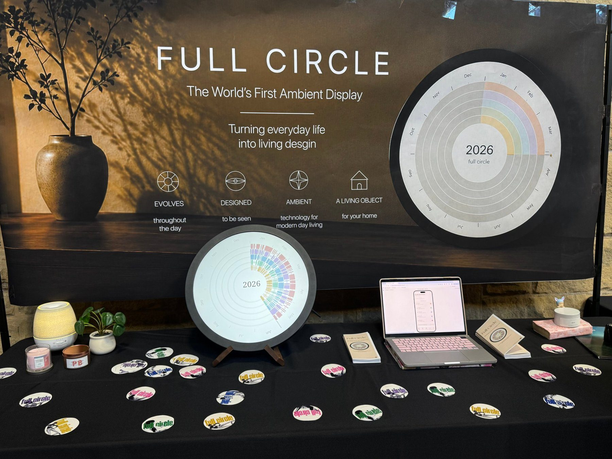
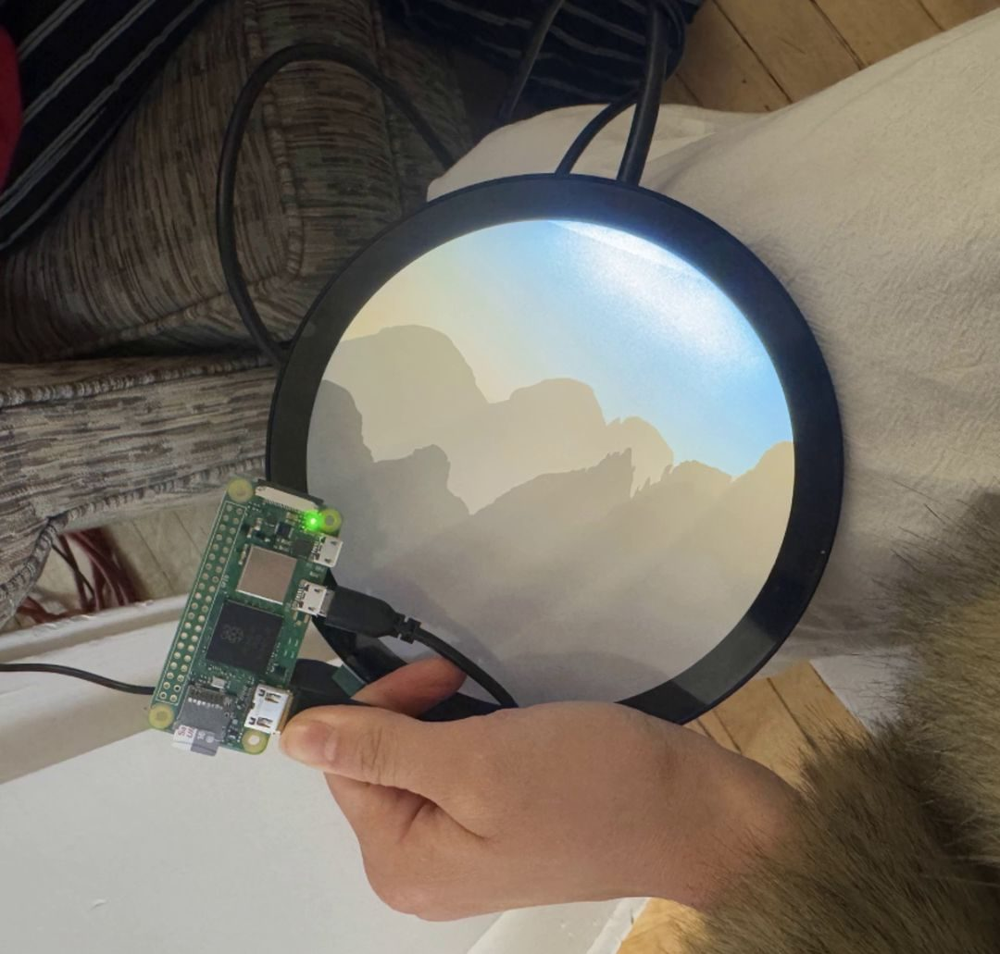
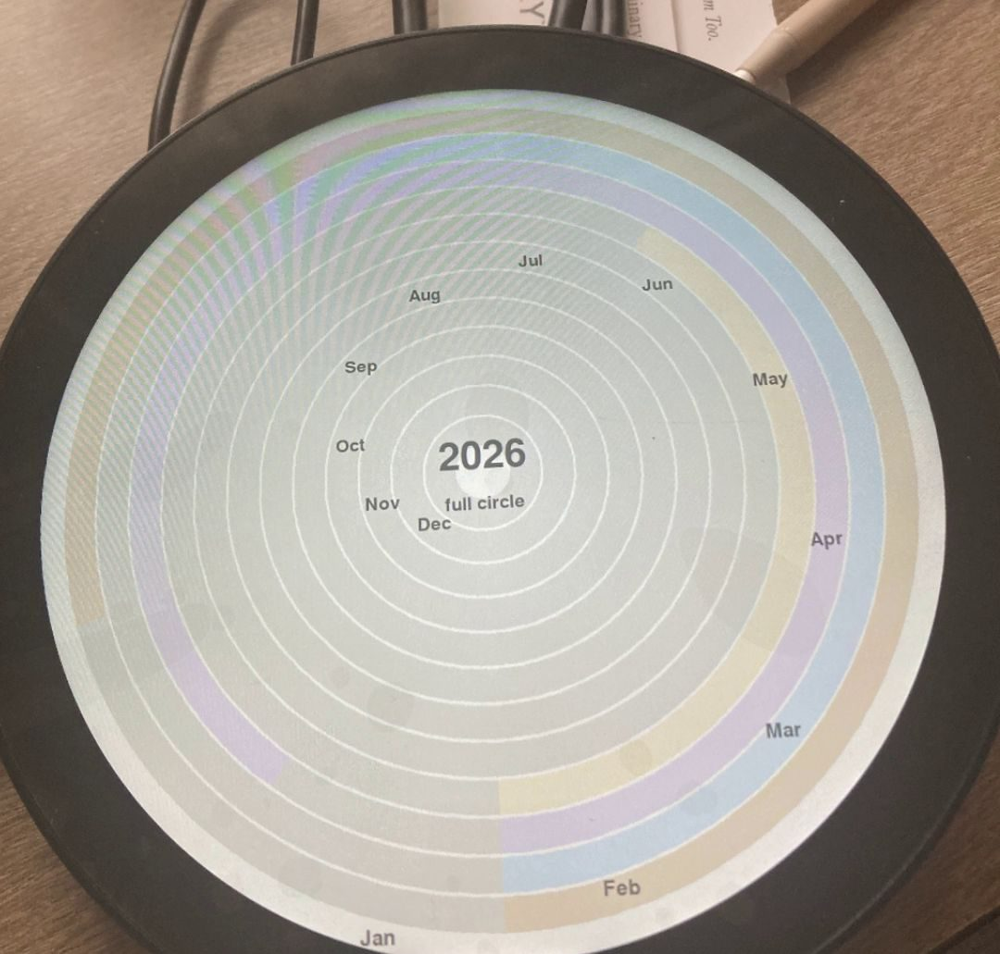
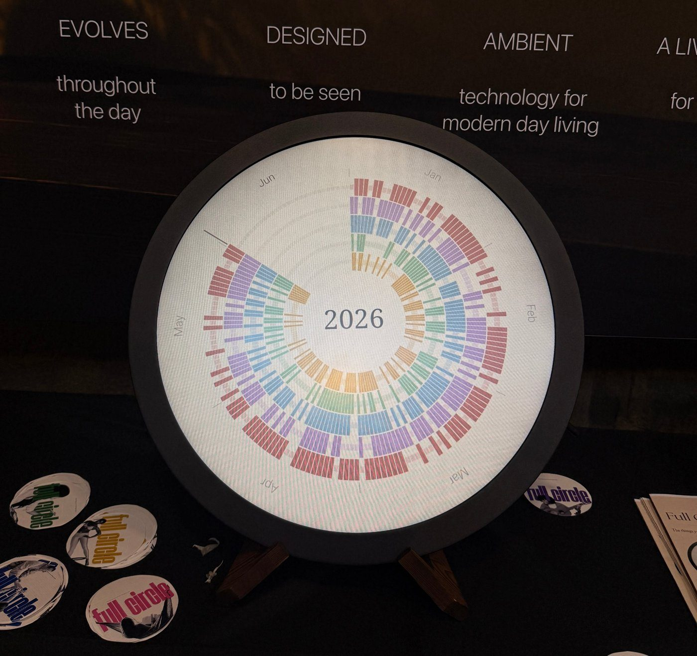
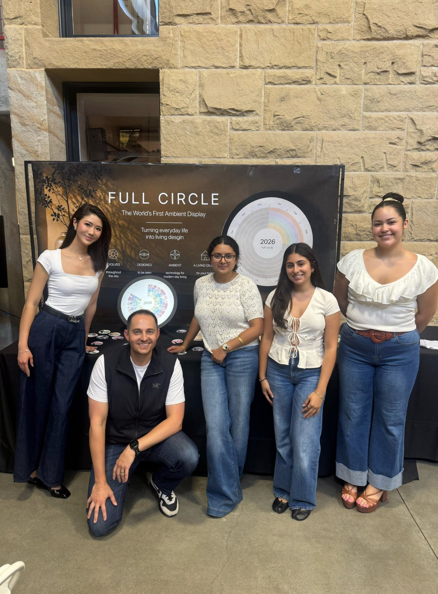

Our team designed Full Circle, a round display that turns logged moments into slowly growing art, so reflection lives in your space instead of in an app. I led market research, user testing and marketing.
18 to 30 year olds, in their own rooms, to see where reminders actually live.
Mini LCD to a 15 inch round screen, driven by a Raspberry Pi.
Cost research moved us to design-conscious buyers.
App-only vs. app + artifact over three weeks.
Wellness tools live in two places: strapped to your body or buried in an app. Both ask for constant attention, and most run on streaks, which makes one missed day feel like failure. We wanted something calm that lives in your space and reflects who you are becoming, not just what you checked off.
How might we help people see who they are becoming, not just what they have completed?
Drawing on Temporal Construal Theory, zooming out shifts people from task-level thinking ("did I hit my goal?") to identity-level thinking ("who am I becoming?"). Making behavior visible at a distance, in physical space, supports that shift.
- One missed day turns into "I already skipped, so why bother."
- Physical reminders work in your line of sight; phone reminders get ignored.
- A full year of missed days at once felt discouraging, not motivating.
From a tiny LCD to a 15 inch round screen, from a full year of data to one week at a time, and from charts to art.



Tested a mini LCD to prove we could drive a display, then moved to a larger round screen run by a Raspberry Pi, rendering in Pygame with a small Flask server so the app could talk to the circle.


Market research showed circular displays cost far more than regular screens.
Testing feedback reshaped how much you see at once.

Pushed it from data toward art, so it is beautiful at a glance but private to strangers. Ideas included a pond where your days swim as fish and a tree that grows as you log moments.

Ran a 3-week longitudinal study comparing app-only use with the app paired with the physical artifact.

A circular display that grows with every moment you log, across five pillars: Move, Create, Connect, Enrich and Restore.
Logging and reflection views: look back, look within, look forward.
Visual identity, stickers, brochures and our expo installation.
A landing page with email sign-up, a Reddit post, Instagram content and a QR code at the expo. I wrote the micro-influencer brief and practiced the story through a press release.


To test interest outside of class, we built a landing page with an email sign-up, posted on Reddit (r/getdisciplined), started Instagram content, and put a QR code on the display at the expo.
- Working three-system prototype: app, Raspberry Pi and display
- Launched publicly at the d.school expo
- Brand system carried across poster, app, stickers and brochures
- Run the in-home study longer
- Test with people from the new target group
The hardest part was never the screen. It was making three systems talk to each other, and we learned to prove each layer on its own before combining them. The pivot taught me that cost shapes who you are really designing for.

Minerva is curious about almost everything, and patient enough to learn it.